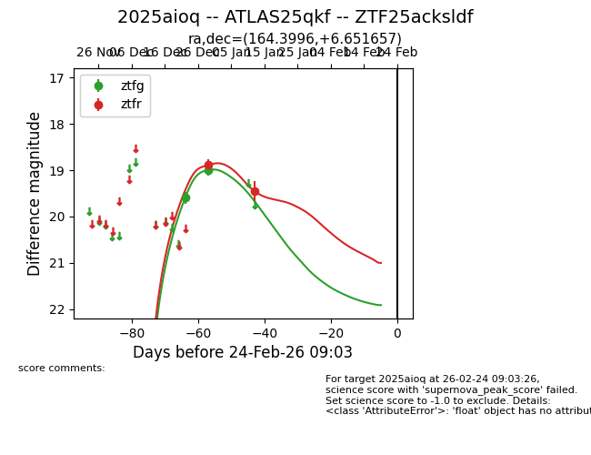
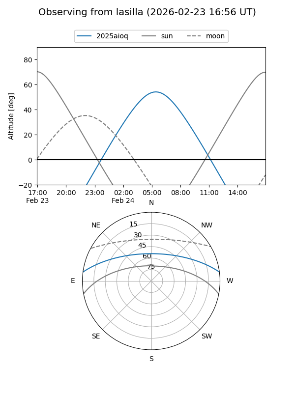
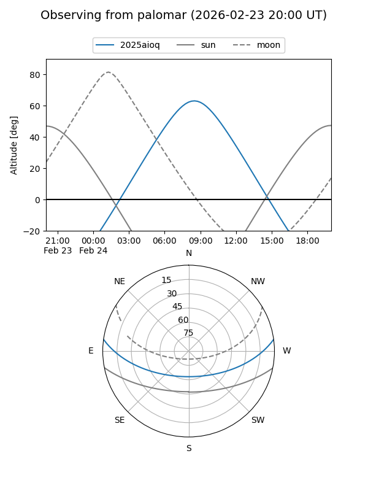
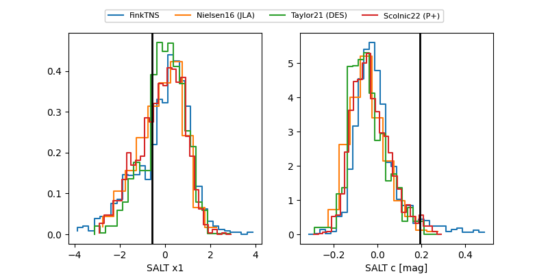

2025aioq
Target 2025aioq at 2025-12-30 19:38
Aliases and brokers:
FINK: fink-portal.org/ZTF25acksldf
Lasair: lasair-ztf.lsst.ac.uk/objects/ZTF25acksldf
ALeRCE: alerce.online/object/ZTF25acksldf
TNS: wis-tns.org/object/2025aioq
YSE: ziggy.ucolick.org/yse/transient_detail/2025aioq
alt names
ZTF25acksldf (ztf,fink_ztf)
2025aioq (tns,yse)
ATLAS25qkf (atlas)
Coordinates:
equatorial (ra, dec) = 164.3996,+6.65166
equatorial (HMS+DMS) = 10:57:35.91,+06:39:05.96
galactic (l, b) = (244.8725,+56.09721)
Flags:
Photometry:
last ztfg=19.00, ztfr=18.89
2 ztfg, 1 ztfr detections
Lightcurve

Visibility


Additional plots
